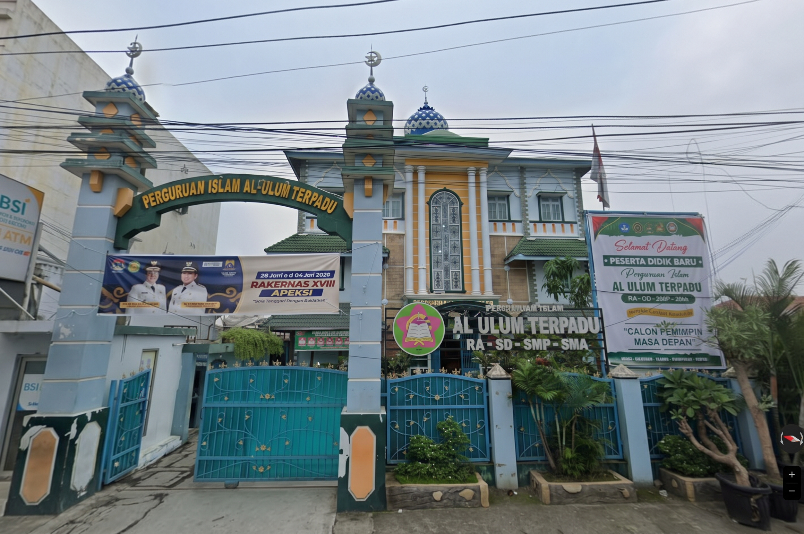
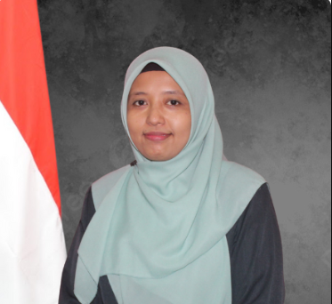
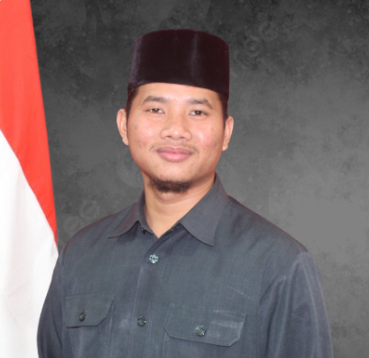
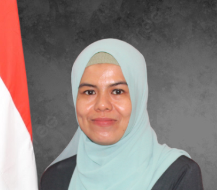

Menjadi lembaga pendidikan menengah unggulan yang mencetak generasi berkarakter Islami, berprestasi dalam IPTEKS (Ilmu Pengetahuan, Teknologi, dan Seni), serta berwawasan global berlandaskan Al-Qur'an dan As-Sunnah.
Generasi Cerdas & Berakhlak
Tempat terbaik menumbuhkan anak yang cerdas, berakhlak, dan percaya diri
SMA Islam Al-Ulum Terpadu Medan memadukan iman dan takwa dengan ilmu pengetahuan dan teknologi, agar putra-putri Bapak/Ibu siap melangkah ke perguruan tinggi terbaik tanpa kehilangan jati diri.
- Terakreditasi A
- Program Tahfidz Intensif
- Lingkungan belajar kondusif
300+ Siswabelajar bersama kami
Kurikulum TerpaduSeimbang ilmu umum & agama
Mengapa Al-Ulum Terpadu
Pendidikan yang membentuk akal dan akhlak
Program unggulan yang kami siapkan agar anak tumbuh berprestasi, berkarakter, dan siap menghadapi masa depan.
Tahfidz Intensif
Pembinaan hafalan Al-Qur'an yang terarah, dibimbing guru berpengalaman dengan pembiasaan ibadah setiap hari.
Pendekatan STEM
Pembelajaran sains, teknologi, rekayasa, dan matematika yang melatih berpikir kritis, kreatif, dan inovatif.
Bahasa Inggris & Arab
Penguatan kemampuan dua bahasa asing sebagai bekal studi lanjutan hingga ke luar negeri.
Kewirausahaan Syariah
Membekali siswa dengan kecakapan hidup dan wawasan berwirausaha yang sesuai nilai-nilai Islam.
Karakter Islami
Menanamkan adab, disiplin, kemandirian, dan jiwa kepemimpinan melalui keteladanan guru setiap hari.
Siap ke Perguruan Tinggi
Lulusan kami diterima di PTN favorit melalui jalur SNBP hingga universitas di luar negeri.

Tentang Kami
Profil Sekolah
Institusi pendidikan menengah unggulan yang mengintegrasikan IPTEKS dengan fondasi iman dan takwa (IMTAQ) yang kukuh.
SMA Islam Al-Ulum Terpadu Medan berkomitmen mencetak generasi berprestasi dengan pembentukan karakter Islami serta nilai-nilai Profil Pelajar Pancasila. Siswa mendapat pengalaman belajar modern dan komprehensif di lingkungan yang kondusif.
Sekolah berfokus pada kecerdasan literasi, kemampuan berpikir kritis, dan adab keseharian, agar para siswa menjadi calon pemimpin masa depan berwawasan global yang siap melangkah ke perguruan tinggi terkemuka dan menjadi agen perubahan positif di masyarakat.
- Tahfidz Intensif
- STEM
- English & Arabic Proficiency
- Kewirausahaan Syariah
Misi
Integrasi Pendidikan.
Menyelenggarakan proses pembelajaran yang memadukan nilai-nilai keislaman (IMTAQ) dengan ilmu pengetahuan dan teknologi modern secara komprehensif.
Pembentukan Karakter.
Membina peserta didik agar memiliki akhlakul karimah, kedisiplinan, kemandirian, dan jiwa kepemimpinan melalui keteladanan dan pembiasaan ibadah sehari-hari.
Prestasi Akademik & Non-Akademik.
Memfasilitasi dan mengembangkan potensi minat, bakat, serta kecerdasan siswa untuk meraih prestasi optimal di tingkat nasional maupun internasional.
Inovasi Pembelajaran.
Menerapkan metode pembelajaran inovatif abad 21 (berpikir kritis, kolaboratif, komunikatif, dan kreatif) berbasis literasi, STEM, dan penguasaan bahasa asing (Inggris dan Arab).
Pemberdayaan Lulusan.
Membekali siswa dengan kecakapan hidup (life skills), wawasan kewirausahaan syariah, serta kesiapan akademik yang matang untuk menembus perguruan tinggi terkemuka.
Akademik
Informasi Akademik
Program dan kegiatan yang mendukung perkembangan potensi setiap siswa.
01
Kurikulum & Peminatan
Kurikulum yang memadukan nilai keislaman dengan sains, teknologi, dan bahasa, dengan pilihan peminatan sesuai minat dan rencana studi lanjutan siswa.
Selengkapnya02
Ekstrakurikuler
Beragam kegiatan pengembangan bakat seperti Pramuka, olahraga, seni, tahfidz, dan klub sains untuk membentuk karakter dan kepemimpinan.
Lihat kegiatan03
Prestasi Siswa
Capaian siswa di bidang akademik maupun non-akademik, dari tingkat kota hingga internasional, serta kelulusan ke perguruan tinggi pilihan.
Baca kabar prestasi
Tenaga Pendidik
Dibimbing guru yang berdedikasi
Pimpinan dan pendidik kami mendampingi setiap siswa dengan keteladanan dan kepedulian.

Listari, S.Pd., M.Pd
Kepala Sekolah SMA Islam Al-Ulum Terpadu Medan

Deki Irwanda, S.Pd
Wakil Kepala Sekolah Bidang Kurikulum

Hildani Sari Harahap, S.Pd., M.Hum
Wakil Kepala Sekolah Bidang Kesiswaan
Kabar Sekolah
Prestasi & Berita Terbaru
Bukti nyata pembinaan akademik dan keagamaan yang konsisten.
Prestasi
Siswa SMA Islam Al-Ulum Terpadu Medan diterima di Universitas Al-Azhar Mesir
Kabar membanggakan datang dari lulusan sekolah kami yang berhasil diterima di universitas Islam tertua di dunia, buah dari pembinaan akademik dan keagamaan yang konsisten.
Baca selengkapnyaKelulusan
Kembali mengantar siswa lulus SNBP ke PTN favorit
Sejumlah siswa dinyatakan lulus seleksi SNBP ke perguruan tinggi negeri favorit, menunjukkan kesiapan akademik lulusan kami.
Baca selengkapnyaKegiatan
Kunjungan studi banding ke Buahati Islamic School, Kramat Jati, Jakarta Timur
Kunjungan studi banding untuk bertukar pengalaman dan praktik baik dalam pengelolaan pembelajaran dan pembinaan karakter di sekolah Islam.
Baca selengkapnya
Dokumentasi
Galeri Kegiatan
Sekilas suasana belajar, ibadah, dan kebersamaan di sekolah kami.
Wujudkan masa depan terbaik untuk putra-putri Anda
Bergabunglah bersama keluarga besar SMA Islam Al-Ulum Terpadu Medan. Kami siap menjawab setiap pertanyaan Bapak/Ibu.